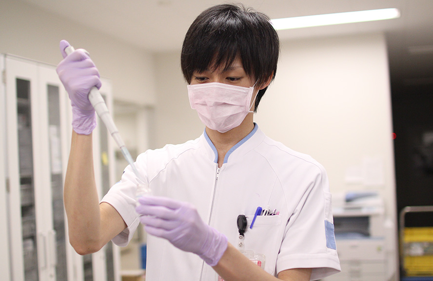
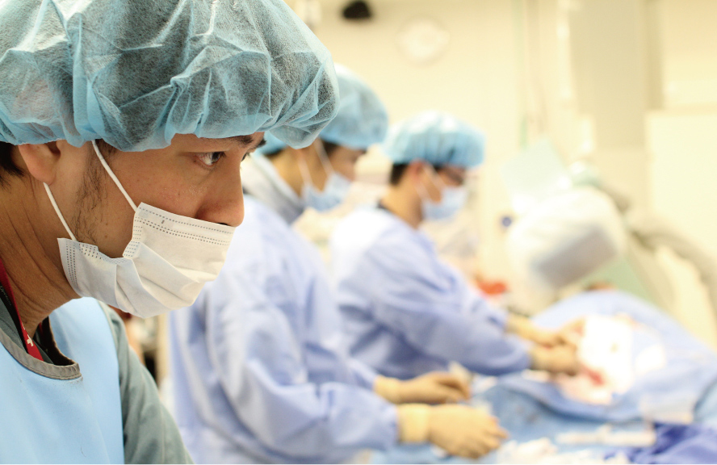

検査技師部
Laboratory technician【臨床検査技師】
信頼される
迅速で正確な検査


 【役割】
【役割】
病院では患者さんの病気を診断し、治療を進めるために検査を行っています。一言に検査といっても多くの種類があり、さまざまな職種のスタッフがかかわっていますが、臨床検査技師が携わる検査は大きく二つに分けることができます。一つは患者さんと直に接して行う生理学的検査で、これには心電図や超音波（エコー）、脳波や肺活量といった機能検査などがあります。もう一つは血液や尿などの患者さんから提供された「検体」を用いた検査で、検体の中の成分や細胞について調べるものす。このように、患者さんの診療に必要な検査を専門的な知識や技術を使って正確に行い、その結果を医師や看護師に報告することが私たち臨床検査技師の役割です。
【臨床工学技士】
各治療を支える
機械のプロフェッショナル

【役割】
みなさまにとって臨床工学技士という資格は、あまり聞きなれない資格かもしれません。近年、医療の高度化に伴い病院内では沢山の医療機器が扱われており、そういった機器がいつも安全に作動するように保守点検、操作を行うのが私たち臨床工学技士の役割です。しかし私たちは、機械ばかり見ているただの機械屋ではありません。業務の多くは患者さんのベッドサイドで臨床業務に携わっています。機械のプロフェッショナルであると共に、機械を通して患者さんの状態を見つめ、安全な医療を提供できるよう日々努めています。人工呼吸器や人工心肺装置などの生命維持管理装置から、点滴をおこなう機械と幅広く細部の機器まで管理を行っています。